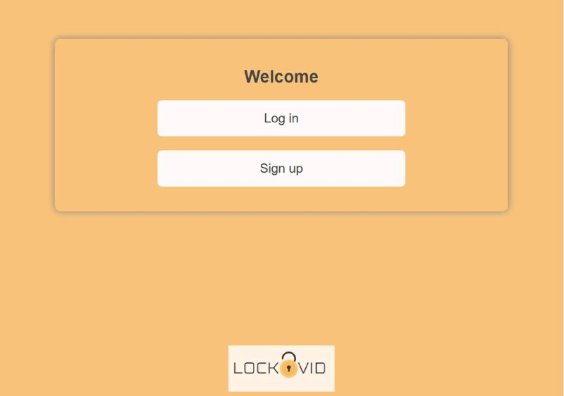
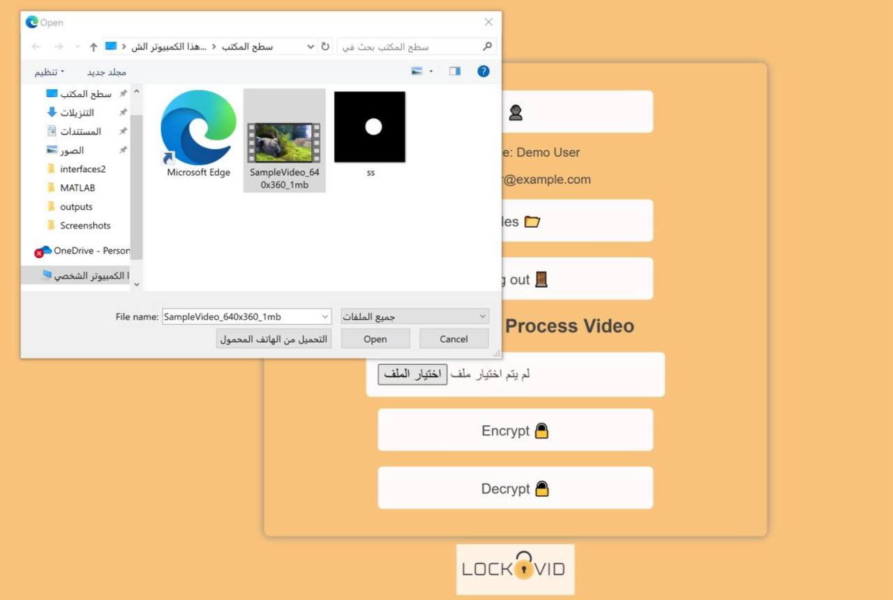
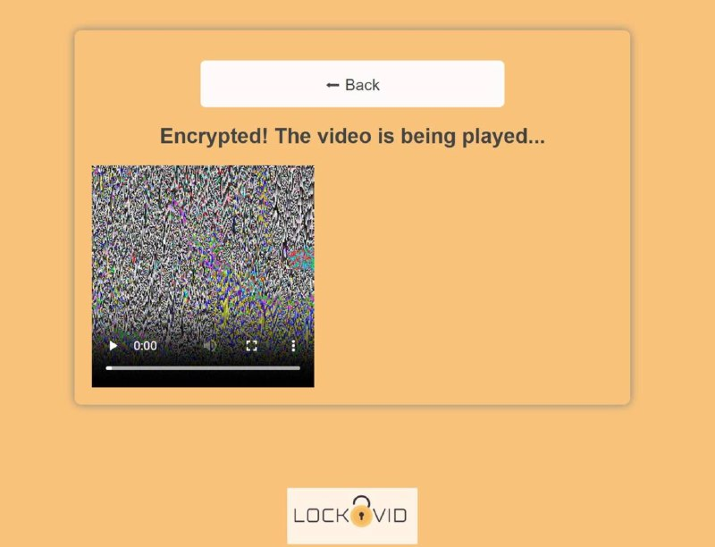
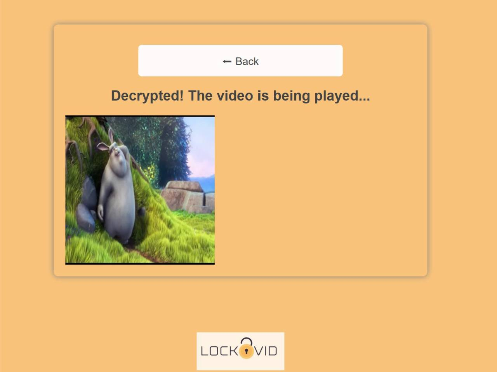

System Interface
The following screenshots demonstrate the main interfaces and workflow of the LockVid system.

Welcome screen displayed when launching the application.

Main dashboard providing access to system functions.

Interface for selecting the target video file.

Output and download page for processed videos.

Encryption interface demonstrating the protection process.

Decryption interface used to restore encrypted content.